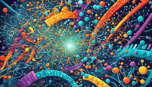
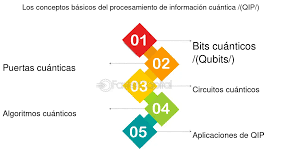
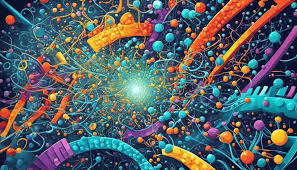
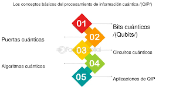
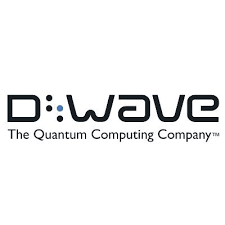
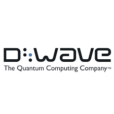

¿Qué es la Computación Cuántica?
La computación cuántica es un campo emergente que combina los principios de la mecánica cuántica y la informática para resolver problemas extremadamente complejos que las computadoras clásicas no pueden resolver en un tiempo razonable. A diferencia de la computación tradicional, que utiliza bits como unidad básica de información (los cuales solo pueden ser 0 o 1), la computación cuántica emplea qubits. Los qubits aprovechan fenómenos cuánticos como la superposición y el entrelazamiento, lo que les permite representar múltiples estados al mismo tiempo.

Principios Clave
- Superposición: En computación cuántica, un qubit puede estar en un estado de 0, 1, o ambos al mismo tiempo, gracias a la superposición. Esto permite que las computadoras cuánticas realicen múltiples cálculos simultáneamente, aumentando exponencialmente la capacidad de procesamiento.
- Entrelazamiento Cuántico: Los qubits pueden estar entrelazados, lo que significa que el estado de un qubit está directamente relacionado con el estado de otro, sin importar la distancia entre ellos. Este fenómeno permite la transmisión de información de una forma más rápida y eficiente.
- Interferencia Cuántica: La interferencia se utiliza en los algoritmos cuánticos para amplificar las soluciones correctas y cancelar las incorrectas, aprovechando así la probabilidad cuántica.
Aplicaciones y Potencial
La computación cuántica tiene el potencial de transformar sectores como la criptografía, optimización, inteligencia artificial, medicina, y ciencia de materiales. Por ejemplo, puede mejorar la capacidad para descifrar códigos criptográficos, simular moléculas complejas para desarrollar nuevos fármacos o materiales, y optimizar rutas y sistemas logísticos. Algunos ejemplos incluyen:
- Criptografía: Los sistemas actuales de criptografía, como RSA, se basan en la dificultad de factorizar números grandes, algo que una computadora cuántica avanzada podría hacer en mucho menos tiempo.
- Simulación de Procesos Moleculares: La computación cuántica puede ayudar a simular interacciones moleculares complejas, lo que facilita la creación de nuevos medicamentos y materiales.
- Optimización: Con su capacidad de procesar múltiples combinaciones de forma simultánea, es ideal para problemas de optimización, como mejorar rutas de transporte o ajustar portafolios de inversión en finanzas.
 



Estado Actual y Desafíos
Aunque existen prototipos de computadoras cuánticas, como las de IBM, Google, y D-Wave, su uso aún está en etapas de investigación y desarrollo. Uno de los mayores desafíos es la coherencia cuántica: los qubits son muy sensibles al entorno, lo que significa que cualquier interferencia externa puede desestabilizar sus estados, causando errores en los cálculos.
 

El Futuro de la Computación Cuántica
Con avances en la estabilización de qubits, algoritmos cuánticos y mejoras en hardware, se espera que la computación cuántica pueda llegar a resolver problemas más allá del alcance de la computación clásica. Empresas tecnológicas, laboratorios de investigación y gobiernos de todo el mundo están invirtiendo en el desarrollo de la tecnología cuántica debido a su promesa de cambiar el panorama tecnológico actual.